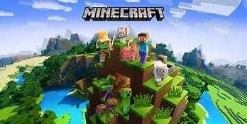
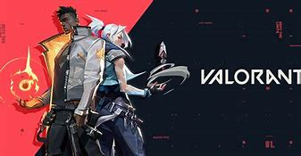
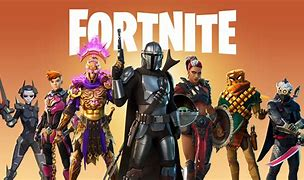

What are the benefits of these Games?

Below are the basic informations you need to know about these Games. And what benefits will you get upon playing it:
Minecraft
Why Should You Play Minecraft?
Undoubtedly one of the best is Minecraft. It provides a great environment to encourage creativity and "out of the box" thinking while also teaching kids the fundamentals of programming, teamwork, problem-solving, and project management. Minecraft is fun to play because It enables freedom, equality, and the capacity for creative expression. There are many ways to express yourself in this game, such as by creating your own home or any other type of building. You can construct almost anything in Minecraft thanks to the abundance of building materials. Minecraft helps not only kids but even adults become more fluent in current technologies in order to function in an increasingly digital world. Minecraft helps people regulate emotions, build strong social ties, and improve other cognitive abilities.
Valorant
Why Should You Play Valorant?
You will gain Experience.This game is not just about knowing how to shoot, you have to use your tactical abilities to its core. In other first person shooting games the players can jump off buildings or run while shooting, but you can’t do this here. Valorant is a user-friendly game, There are so many game modes and each one has a unique feature! If you’re in the mood for crushing your enemies and boosting your rank up you can play the Competitive mode. Or if you just wanna play with friends casually to test your skills there’s the Unranked mode for that! These two modes last for 30-40 minutes each.
Fortnite
Why Should You Play Fortnite?
Users of Fortnite's Creative sandbox mode are able to design their own unique maps and game modes. Similar to Minecraft and Roblox, this mode has the potential to foster creativity while teaching problem-solving and engineering skills. Kids can use it to create absurd structures and objects as well as create new Fortnite games. Online peer groups, such as gaming clans or collectives, can forge friendships that are just as strong as those formed in person.The sense of belonging that results from these connections can help kids overcome negative outcomes like depression and substance abuse by giving them a stronger sense of self-worth.
Roblox
Why Should You Play Roblox?
Kids and teens can enjoy roblox to the fullest. Your social interaction skills get better,You get virtual 3D game experience, And last a person playing roblox can master his/her creativity, It is this said language that is present within Roblox studio, the area in which kids are encouraged to design and create their own games, environments, and other objects.